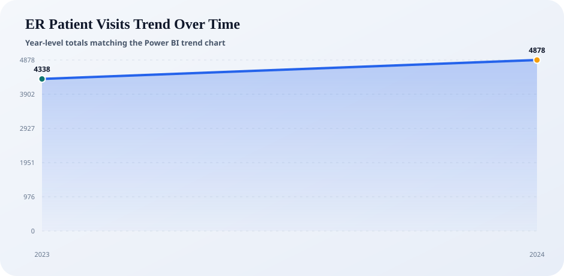
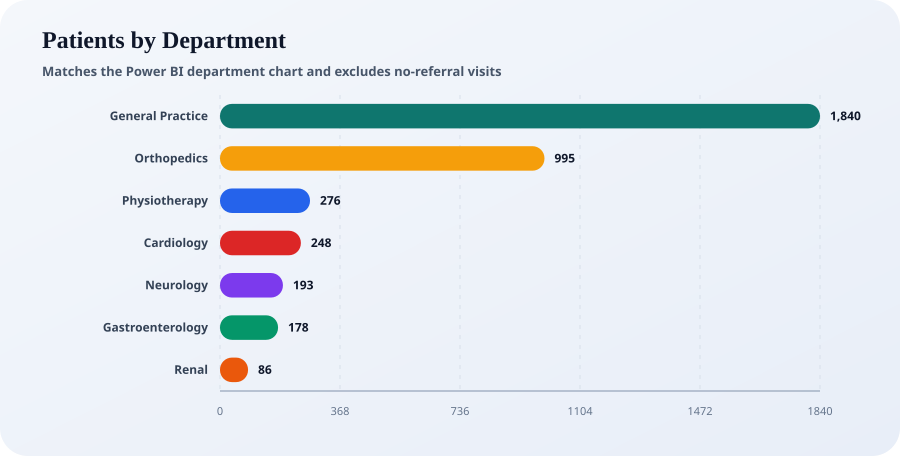
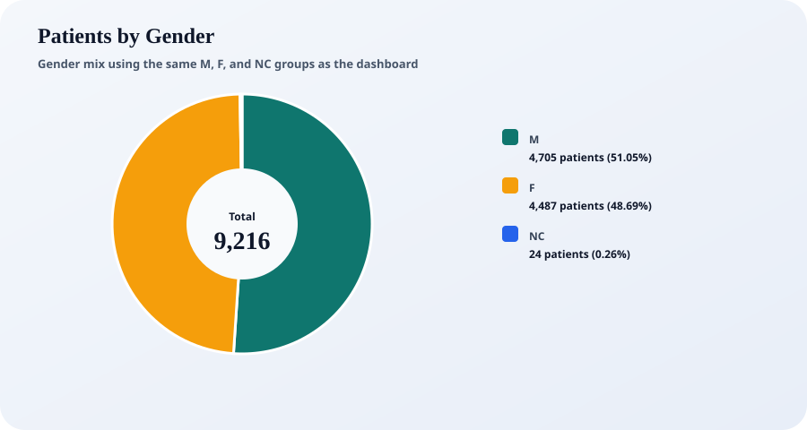
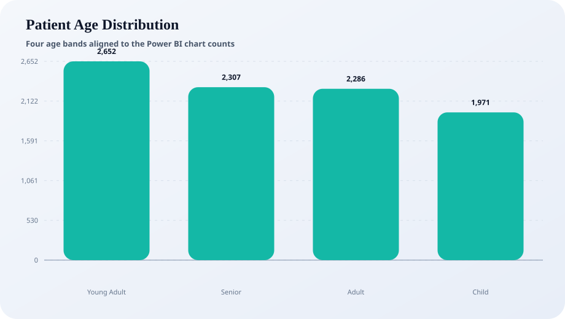

ER patient visits trend over time

This report recreates the main dashboard KPIs and charts directly from the CSV data so the Python output matches the Power BI view as closely as possible in totals, rounding, and chart categories.



